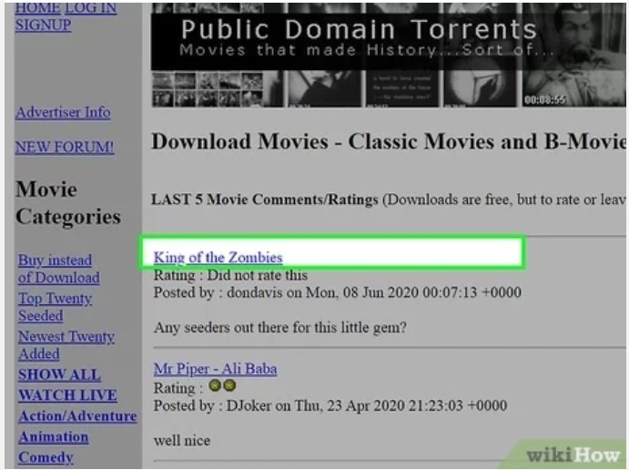
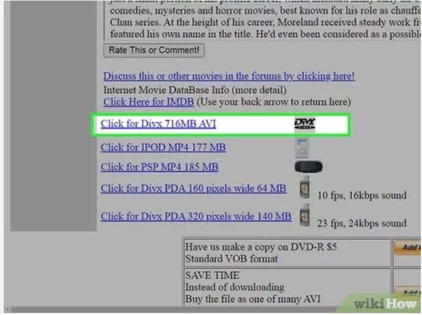
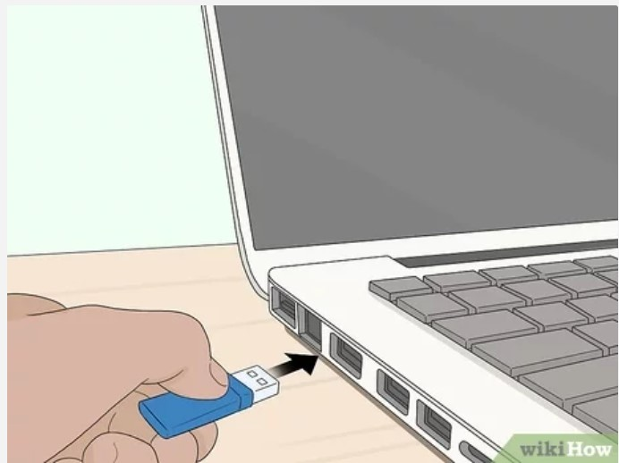
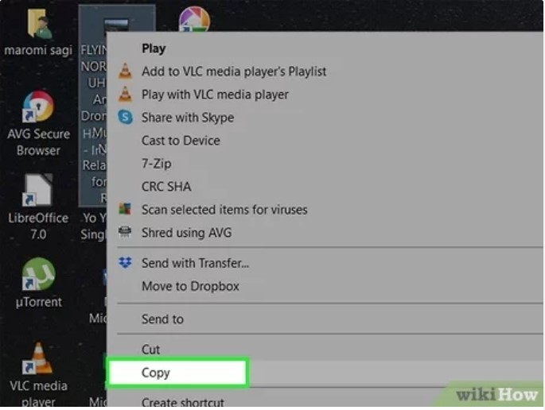
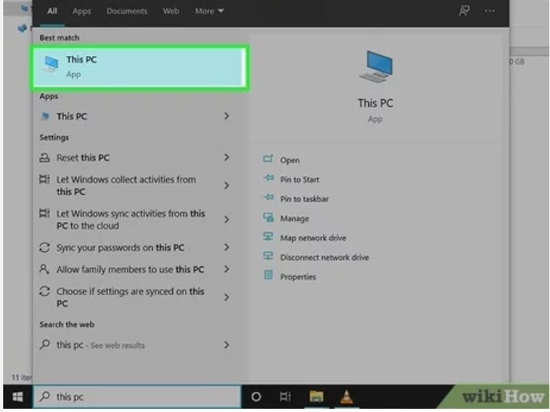
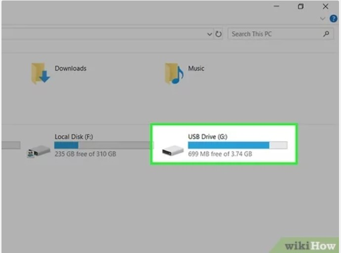
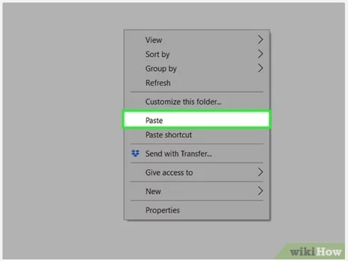
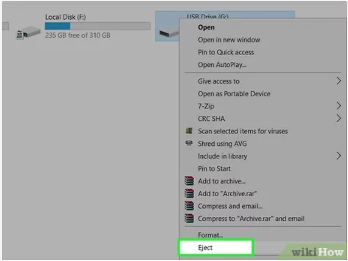
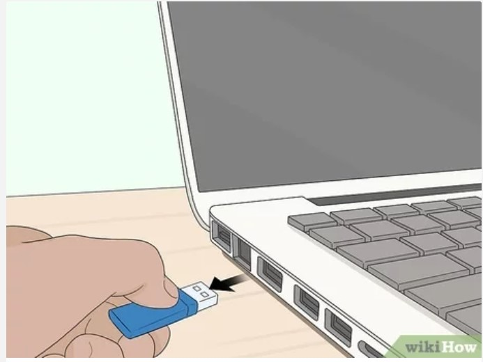

Cómo descargar películas y transferirlas a una memoria USB Ahora que los servicios de transmisión de contenido como Netflix y Hulu son tan populares, es difícil encontrar películas disponibles para descargar. Aunque algunos servicios permiten guardar sus películas para verlas sin conexión a Internet, realmente no puedes guardar sus archivos en una memoria USB. Este wikiHow te enseñará cómo descargar películas (de forma legal) desde Internet y guardarlas en una memoria USB extraíble. Pasos  1.-Busca una película para descargar  2.-Descarga un archivo de vídeo a la computadora.  3.-Conecta la memoria USB a la computadora.  4.-Copia el archivo de la película.  5.-Abre "Este equipo" (computadora) o "Finder"  6.-Abre la memoria USB.  7.-Haz clic derecho en un espacio en blanco en la memoria USB y selecciona  8.-Extrae la memoria USB  9.-Extrae la memoria USB.